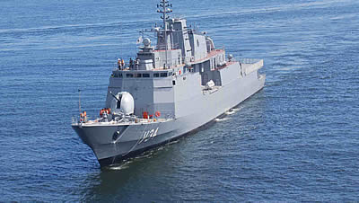

Cv Barroso (V-34)A Corveta Barroso (V-34), é o quinto navio a ostentar esse nome na Marinha do Brasil, em homenagem ao Almirante Francisco Manuel Barroso da Silva, Barão do Amazonas. A Barroso foi a única de sua classe. Foi ordenada em 1994, sendo construída no Arsenal de Marinha do Rio de Janeiro (AMRJ), Ilha das Cobras, Rio de Janeiro, a um custo final estimado em US$ 263 milhões. O casco n.º 126, teve sua quilha batida em 21 de dezembro de 1994 e foi lançada ao mar em 20 de dezembro de 2002, em cerimônia presidida pelo Vice-Presidente da República Dr. Marco Antônio de Oliveira Maciel, tendo como madrinha a Sra. Solange Garcia Lopes Serpa, esposa do AE Ivan da Silveira Serpa, Ministro da Marinha no período compreendido entre 8 de outubro de 1992 a 1º de janeiro de 1994. A construção do navio esteve praticamente parada entre 2003 e 2005, por falta de recursos.